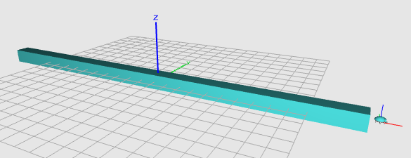

Tags
- Git (1)
- Snippet (5)
- GDB (1)
- Debugging (1)
- MQTT (1)
- Mosquitto (1)
- Network (1)
- Protocol (1)
- Python (1)
- JavaScript (4)
- Sudoku (1)
- Math (1)
- Combinatorics (1)
- Latin_Square (1)
- Puzzle (1)
- SAT (1)
- Solver (1)
- 3D (1)
- Graphics (1)
- BeetleBlocks (1)
- Visual (1)
- Programming (1)
- Fractal (1)
- Ruby (4)
- mruby (1)
- graph (1)
- visualization (1)
- NLP (1)
- WordNet (1)
- C++ (2)
- Algorithm (2)
- AWS (1)
- Ubuntu (1)
- rbenv (1)
- Wikipedia (1)
- thumbnail (1)
- image (1)
- viewer (1)
- React (1)
- Redux (1)
- react-router (1)
- Bootstrap (1)
- Express (1)
- Node (1)
- Middleman (1)
- BinData (1)
Making a Menger Sponge with BeetleBlocks
3D Graphics BeetleBlocks Visual Programming FractalPosted on Sep 3
My step by step process of making a Menger Sponge of level 3 using BeetleBlocks, a visual programming environment for 3D design that everyone can enjoy via the Web browser:
Youtube video

Process
Repeatedly letting the beetle place a cube of unit length and move the same length forward makes a square bar.

It can trivially turn into a plate by nesting the bar making process within the outer repeat with the y-coordinate shift (change absolute y by 1).
Nesting once more in the same way produces a (bigger) cube. Moving around a block of code without breaking its syntactic structure is where a visual programming language really shines.
Skipping a cube randomly still yields a cube but sponge look and feel emerge.
Before attempting to turn it into a Menger sponge,
we wrap the conditional in a predicate named menger as a preparation.
Another preparation, the floor reporter using round.

Now the groundwork is done, we try implementing the Menger sponge of level 1 (iteration = 1). The interface of the menger predicate is tabulated below.
| Input | Expected Actual Value |
|---|---|
x, y, z |
The position of the beetle. |
iterations |
The number of iterations (The level) of a Menger sponge. |
x1 |
The starting x-coordinate (inclusive) of the sponge. |
x2 |
The terminating x-coordinate (exclusive) of the sponge. |
y1 |
The starting y-coordinate (inclusive) of the sponge. |
y2 |
The terminating y-coordinate (exclusive) of the sponge. |
z1 |
The starting z-coordinate (inclusive) of the sponge. |
z2 |
The terminating z-coordinate (exclusive) of the sponge. |
| Output | Condition |
|---|---|
true |
The given point lies in a cell constituting the sponge (not in a hole). |
false |
The given point is in a hole of the sponge. |
A "hole" is made if two of the coordinates lie in middle thirds.
The final step is making the menger predicate recursive.
The recursion terminates if the iterations (level) equals to zero.
A level-0 Menger sponge is just a cube without any hole in it. Hence, the predicate returns true.
If the level is greater than zero, we recalculate the range of a sub-sponge and recurse down one level (iterations - 1).
Voila!
2015 My gh-pages